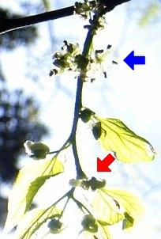
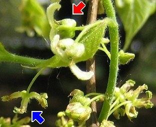

|
| Der Zürgelbaum blüht im Mai.
Die männlichen Blüten stehen am Zweiganfang, die weiblichen am Ende.
 |  Die weiblichen Blüten haben einen Fruchtknoten mit 2 langen Narbenästen.
Die männlichen Blüten haben 4-6 Staubblätter.
Es gibt auch zwittrige Blüten mit Fruchtknoten und Staubblättern.
|